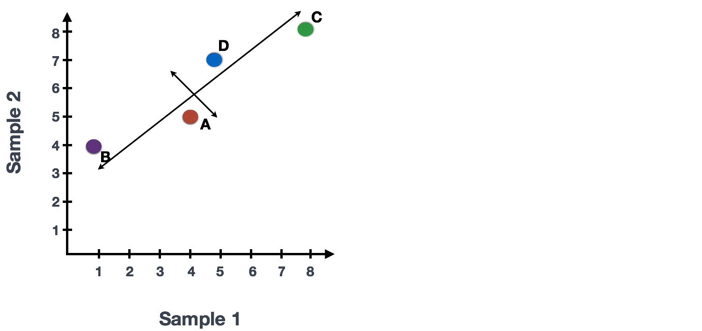
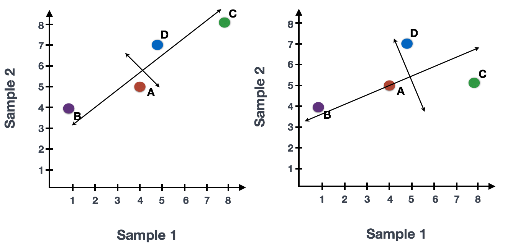
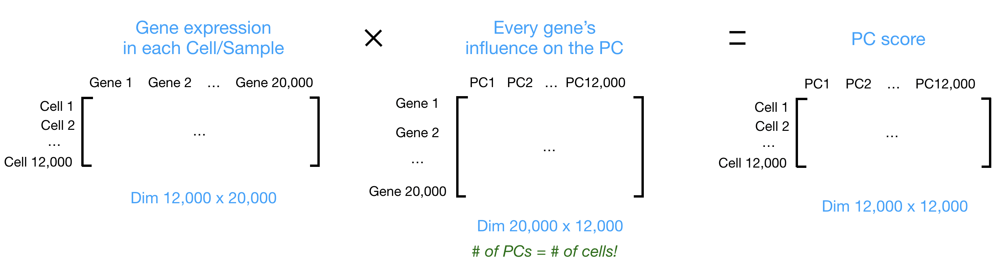
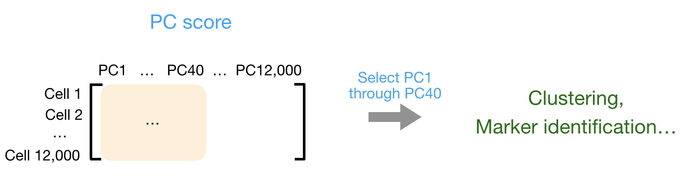

PCA原理
- Explain how similarity between cells/samples can be evaluated by the Principal Components Analysis (PCA)
Principal Component Analysis (PCA) is a technique used to emphasize variation as well as similarity, and to bring out strong patterns in a dataset; it is one of the methods used for “dimensionality reduction”. We will briefly go over PCA in this lesson (adapted from StatQuests/Josh Starmer’s YouTube video), but we strongly encourage you to explore the video StatQuest’s video for a more thorough explanation/understanding：
1 PCA基本原理
Let’s say you had quantified the expression of four genes in two samples (or cells), you could plot the expression values of those genes with one sample represented on the x-axis and the other sample on the y-axis as shown below:

You could draw a line through the data in the direction representing the most variation, which is on the diagonal in this example. The maximum variation in the dataset is between the genes that make up the two endpoints of this line.
We also see the genes vary somewhat above and below the line. We could draw another line through the data representing the second most amount of variation in the data, since this plot is in 2D (2 axes).

The genes near the ends of each line would be those with the highest variation; these genes have the greatest influence on the direction of the line, mathematically.

For example, a small change in the value of Gene C would greatly change the direction of the longer line, whereas a small change in Gene A or Gene D would have little affect on it.

We could also rotate the entire plot and view the lines representing the variation as left-to-right and up-and-down. We see most of the variation in the data is left-to-right (longer line) and the second most variation in the data is up-and-down (shorter line). You can now think of these lines as the axes that represent the variation. These axes are essentially the “Principal Components”, with PC1 representing the most variation in the data and PC2 representing the second most variation in the data.

Now, what if we had three samples/cells, then we would have an extra direction in which we could have variation (3D). Therefore, if we have N samples/cells we would have N-directions of variation or N principal components (PCs)! Once these PCs have been calculated, the PC that deals with the largest variation in the dataset is designated PC1, and the next one is designated PC2 and so on.
Once the PCs have been determined for an dataset, we have to figure out how each sample/cell fits back into that context to enable us to visualize the similarities/dissimilarities in an intuitive manner. The question here is “what is sample_X’s score for a given PC based on the gene expression in sample_X?”. This is the actual step where the dimensionality is reduced, since you plot PC scores for each sample/cell on the final PCA plot.
PC scores are calculated for all sample-PC pairs as described in the steps and schematic below:
First, each gene is assigned an “influence” score based on how much it influenced each PC. Genes that did not have any influence on a given PC get scores near zero, while genes with more influence receive larger scores. Genes on the ends of a PC line will have a larger influence, so they would receive larger scores but with opposite signs.
Once the influence has been determined, the score for each sample is calculated using the following equation:
Sample1 PC1 score = (read count * influence) + … for all genes
For our 2-sample example, the following is how the scores would be calculated:
## Sample1 PC1 score = (4 * -2) + (1 * -10) + (8 * 8) + (5 * 1) = 51 PC2 score = (4 * 0.5) + (1 * 1) + (8 * -5) + (5 * 6) = -7 ## Sample2 PC1 score = (5 * -2) + (4 * -10) + (8 * 8) + (7 * 1) = 21 PC2 score = (5 * 0.5) + (4 * 1) + (8 * -5) + (7 * 6) = 8.5Here is a schematic that goes over the first 2 steps:
Once these scores are calculated for all the PCs, they can be plotted on a simple scatter plot. Below is the plot for the example here, going from the 2D matrix to a 2D plot:
1.1

2 PCA在单细胞数据降维中的应用
Let’s say you are working with a single-cell RNA-seq dataset with 12,000 cells and you have quantified the expression of 20,000 genes. The schematic below demonstrates how you would go from a cell x gene matrix to principal component (PC) scores for each inividual cell.

After the PC scores have been calculated, you are looking at a matrix of 12,000 x 12,000 that represents the information about relative gene expression in all the cells. You can select the PC1 and PC2 columns and plot that in a 2D way.

You can also use the PC scores from the first 40 PCs for downstream analysis like clustering, marker identification etc., since these represent the majority of the variation in the data. We will be talking a lot more about this later in this workshop.

For datasets with a larger number of cells, only the PC1 and PC2 scores for each cell are usually plotted, or used for visualization. Since these PCs explain the most variation in the dataset, the expectation is that the cells that are more similar to each other will cluster together with PC1 and PC2.